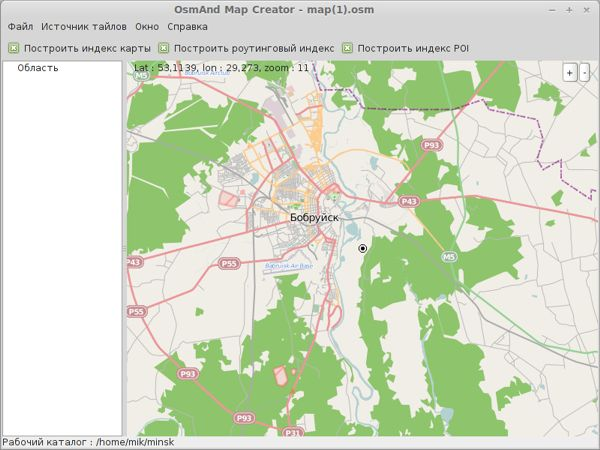

Получив картографические данные конкретного региона в виде текстового XML OSM файла, можно приступить к его конвертации в уже готовый формат карты с векторной или растровой графикой для навигационного приложения. Например, для программного GPS-навигатора OsmAnd (картографическое приложение под Android под OpenSource-лицензией) нужно сконвертировать картографические данные OSM в формат OBF.
Для этого существует специальный конвертор OsmAndMapCreator. Это приложение написано на Java и является кроссплатформенным. Запускается после разархивирования, в зависимости от операционной системы, скриптом sh или bat. Но при этом программа имеет графический интерфейс. Данную программу разрабатывает тот же автор, что и OsmAnd.

Конвертировать файл OSM нужно через меню "Файл" - "Создать файл obf из файла osm". После чего в заранее указанной папке появится файл с расширением obf, который и нужно перенести на Android-устройство в каталог /sdcard/osmand/. Теперь карта данной местности станет доступна в OsmAnd в оффлайн-режиме.
Примечание: при помощи OsmAndMapCreator можно создавать карты OBF и при помощи данных с других картографических онлайн-сервисов.